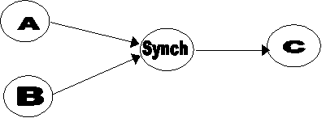

Semantics of Synchronization Step in EON/Intermed Guideline Model
In the Intermed/EON model of guidelines, we use the notion of "Steps" to define the control structure of a clinical guideline. The Steps are specialized into ActionStep, ConditionStep, BranchStep, and SynchronizationStep. This note explains the intended use of SynchronizationStep, over which there are considerable confusion.
The basic idea behind SynchronizationStep is that we need a way to specify the meaning of situations where the same step follows more than one steps, that is, the values of the next_step attribute of multiple steps are the same. Graphically, the ‘next_step’ links of several nodes converge on the same node. To disambiguate among three alternatives that we model, we use a SynchronizationStep has the ‘continuation’ attribute, whose value can be ‘wait_for_all,’ ‘procede_after_one’ (Figure 1b) and a default case where the SynchronizationStep is implicit (Figure 1a).
(1a)

(1b)
Figure 1 Problem of converging action specifications
The two allowed values of the continuation attribute is designed to model the following two scenarios:
1. A and B are potentially parallel threads of execution. Do C only after A and B have been completed (the wait_for_all case). Example: Give a drug ( C ) only after two other drugs (A and B) have been given.
2. A and B are potentially parallel threads of execution. Do C after A or B has been completed. If a second thread of execution reaches the SynchronizationStep, that thread is not continued (the procede_after_one case). Example: Perform an intervention ( C ) after obtaining information from either A or B. Do not repeat the intervention after each test.
The default case models the third scenario
3. A and B are not parallel threads of execution. Do C after A or B has been completed. If the control flow reaches C multiple times, repeat the execution of C as often as necessary. Example, C is an intervention that should be given multiple times. Node B is a Condition_Step that checks the number of times C has been given previously.